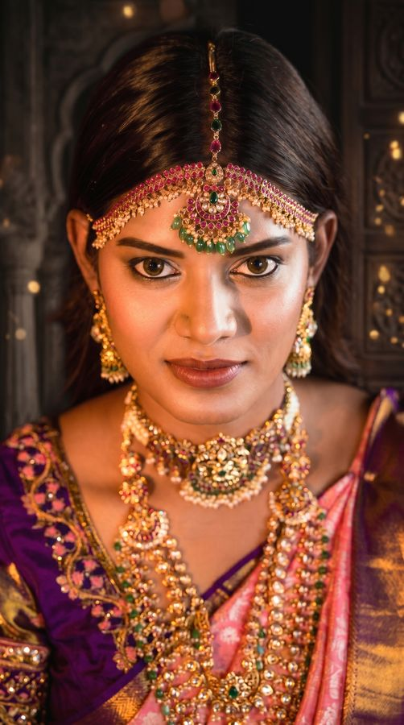

Latest
Newly Written
Fresh from the studio and the workbench — the pieces and ideas occupying us this season.

Craft
How a Haaram Is Made
Six weeks, one karigar, and several hundred hand-set kemp stones. We follow a single long-chain haaram from a sheet of antique gold to the moment it first catches the light — and explain why nothing about it can be hurried.

Styling
Styling Kemp for a Modern Bride
Ruby-red kemp need not stay sealed in the bridal trunk. We show how a single statement choker, layered with restraint, carries a contemporary bride from the muhurtam to the reception — and into the years that follow.

Heritage
The Language of the Peacock
Why does the mayil appear on almost every temple piece? From a vehicle of the gods to a symbol of monsoon and renewal, the peacock has been speaking in gold for centuries. We learn to read it.